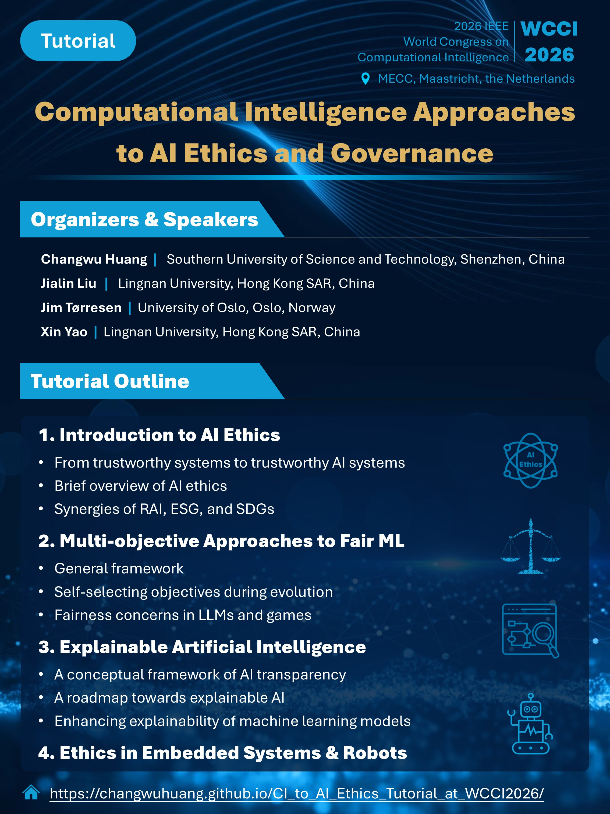

Computational Intelligence Approaches to AI Ethics and Governance
Tutorial at 2026 IEEE World Congress on Computational Intelligence (WCCI 2026)
Abstract and Learning Objectives
Artificial Intelligence (AI) ethics is a critical and rapidly evolving domain, with fairness and explainability as its foundational pillars, alongside privacy, safety, and security. Many papers and books have been published by researchers and practitioners from different communities, addressing different aspects of fair machine learning (FairML) and explainable AI (XAI). However, different work seems to focus on different definitions of fairness and explainability and propose different assessment criteria. As a result, a ML model may appear fair according to one assessment criterion but be simultaneously judged unfair according to another. Moreover, the notion of XAI itself remains contested and context-dependent, raising questions about what “explanation” means, for whom, and for what purpose. At the same time, AI functionality is now embedded in a broad range of systems, from general-purpose computing devices to embedded platforms and robots, as well as large-scale online services. These diverse deployment contexts raise distinct ethical and governance challenges that cut across technical, organizational, and regulatory dimensions.
This tutorial provides a structured deep dive into these challenges. We will first offer a brief overview of AI ethics and governance, situating RAI (Responsible AI), ESG (Environmental, Social, and Governance) and SDGs (Sustainable Development Goals) within a coherent and synergistic conceptual framework. Then, we will introduce the diverse definitions and measurement criteria for fairness in machine learning, explore multi-objective approaches to FairML, and highlight specific fairness concerns in modern systems like Large Language Models (LLMs) and AI in gaming. Subsequently, we will present a conceptual framework of AI transparency that clarifies the understanding and key elements of transparency. Building on this framework, we will articulate what explainability means to different people, at different times and for different purposes, how evolutionary multi-objective optimization could be used naturally to enhance explainability of machine learning models, and how XAI techniques can be used to enhance the performance of evolutionary algorithms and neural networks. Finally, the tutorial will turn to AI ethics in embedded systems and robots, where constraints on computation, sensing, actuation, and autonomy raise distinctive ethical and governance challenges. The tutorial will conclude by synthesizing the interesting synergies between FairML, XAI, and evolutionary computation, suggesting directions for future research and practice in AI ethics and governance.
Organizers and Speakers
Department of Computer Science and Engineering, Southern University of Science and Technology, Shenzhen, China
Changwu Huang received the Bachelor’s degree from Southwest Jiaotong University, Chengdu, China, in 2010, the Master’s degree from Beijing Jiaotong University, Beijing, China, in 2013, and the Ph.D. degree from Institut National des Sciences Appliquées de Rouen Normandie (INSA Rouen Normandie), Rouen, France, in 2018. He is currently a Research Associate Professor at the Department of Computer Science and Engineering of Southern University of Science and Technology, Shenzhen, China. His research interests mainly include Artificial Intelligence Ethics, Trustworthy Artificial Intelligence, Evolutionary Computation, and their practical applications. More information can be found at his personal webpage.
School of Data Science, Lingnan University, Hong Kong SAR, China
Jialin Liu received her PhD in 2016 from Université Paris-Saclay, MSc in 2013 from École Polytechnique & Université Paris-Sud, France, Diplôme d'Ingénieur in 2012 from Polytech'Paris-Sud, France, and BSc in 2010 from Huazhong University of Science and Technology, China. Currently, Jialin is an Associate Professor at the School of Data Science of the Lingnan University, Hong Kong SAR, China. Her main research interests include, but not limited to, AI in games, optimisation and learning under uncertainty, evolutionary computation and its applications, and fair machine learning. She is an Associate Editor of the IEEE Transactions on Games, IEEE Transactions on Evolutionary Computation, and IEEE Transactions on Artificial Intelligence. She has co-organised the tutorial “Evolutionary Computation for Games: Learning, Planning, and Designing” at IEEE CEC2020. She has given a keynote at the IEEE CEC2024. More information can be found at her personal webpage.
Department of Informatics, University of Oslo, Oslo, Norway
Jim Tørresen received the M.Sc. degree in computer architecture and design from the Norwegian University of Science and Technology, in 1991, and the Dr. (Ing.) (Ph.D.) degree in computer architecture and design from the University of Trondheim, in 1996. He is currently a Full Professor with the Department of Informatics, University of Oslo, and a Principal Investigator with the RITMO Centre for Interdisciplinary Studies in Rhythm, Time and Motion. His research interests include artificial intelligence, ethical aspects of AI and robotics, machine learning, robotics, and applying this to complex real-world applications. He is a member of the Norwegian Academy of Technological Sciences (NTVA) and the National Committee for Research Ethics in Science and Technology (NENT). More information can be found at his personal webpage.
Lingnan University, Hong Kong SAR, China
Xin Yao received the B.Sc. degree from the University of Science and Technology of China (USTC), Hefei, China, in 1982, the M.Sc. degree from the North China Institute of Computing Technologies, Beijing, China, in 1985, and the Ph.D. degree from USTC, in 1990. Currently, he is a Vice President (Research and Innovation) and a Tong Tin Sun Chair Professor of Machine Learning with Lingnan University, Hong Kong SAR, China. His major research interests include evolutionary computation, routing optimisation, and trustworthy AI. He won the 2001 IEEE Donald G. Fink Prize Paper Award, the 2010, 2016, and 2017 IEEE Transactions on Evolutionary Computation Outstanding Paper Awards, the 2011 IEEE Transactions on Neural Networks Outstanding Paper Award. He received the 2012 Royal Society Wolfson Research Merit Award, the 2013 IEEE CIS Evolutionary Computation Pioneer Award, and the 2020 IEEE Frank Rosenblatt Award. He served as the President from 2014 to 2015 for IEEE Computational Intelligence Society and an Editor-in-Chief from 2003 to 2008 for IEEE Transactions on Evolutionary Computation. He is an IEEE Fellow and a Fellow of Hong Kong Academy of Engineering. More information can be found at his personal webpage.
Computational Intelligence Approaches to AI Ethics and Governance
Tutorial at 2026 IEEE World Congress on Computational Intelligence (WCCI 2026)
Outline of the Tutorial
Part 1: Introduction to AI Ethics
- From trustworthy systems to trustworthy AI systems
- Brief overview of AI ethics
- Synergies of RAI (Responsible AI), ESG (Environmental, Social, and Governance) and SDGs (Sustainable Development Goals)
Part 2: Multi-objective Approaches to Fair Machine Learning
- General framework
- Self-selecting objectives during evolution
- Fairness concerns in LLMs and games
Part 3: Explainable Artificial Intelligence
- A Conceptual Framework of AI Transparency
- A roadmap towards explainable AI
- Enhancing explainability of machine learning models
Part 4: Ethics in Embedded Systems and Robots

About WCCI 2026
The 2026 IEEE World Congress on Computational Intelligence (WCCI) is the world’s leading forum for advances in computational intelligence. WCCI 2026 will take place in the beautiful and historic city of Maastricht, a vibrant hub of culture, innovation, and international collaboration. This congress brings together the three flagship conferences of the IEEE Computational Intelligence Society:
- The International Joint Conference on Neural Networks (IJCNN)
- The IEEE International Conference on Fuzzy Systems (FUZZ-IEEE)
- The IEEE Congress on Evolutionary Computation (IEEE CEC)
For more information on WCCI 2026, please visit:
WCCI 2026 Official Website